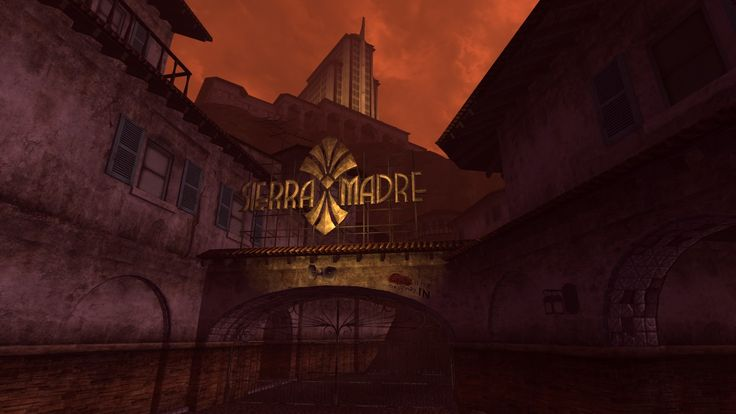

Indiana Jones and New Vegas
Obsidian Entertainment loaded Fallout: New Vegas with cultural references, either in the form of easter eggs or in plain sight. At the beginning of the game, there is an option for the player to pick a perk titled "Wild Wasteland." The perk unlocks zany references throughout the game, many of which are pop-culture related. Without the perk, there are still a large variety of references, some of which are less obvious. One primary pop-culture reference is to Elvis Presley. In almost every playthrough of the game, the player character has to deal with a faction called the Kings. The Kings are a group of Elvis impersonators, although none of them are aware of whom they are impersonating. They reside in a building titled the "King's School of Impersonation," which is a building outside the vibrant New Vegas strip, that, pre-war, was for people training to behave like Elvis. Their gimmick is that each one of them dresses like the former king of rock, and talks similarly. Another apparent reference is to The Treasure of the Sierra Madre. In Fallout: New Vegas, an extension is titled "Dead Money." The extension is a story about breaking into a casino named the Sierra Madre. The message of the DLC is that greed conquers all. You, as the player character, need to learn to let go of the past and your greed. In this case, 37 gold bars are too heavy for the player character to escape with from the casino. The DLC carries a similar message to The Treasure of the Sierra Madre movie and uses a similar structure. Although these are obvious nods to pop-culture surrounding the king and his relation to Vegas and a Hollywood movie, there are less apparent references throughout the game known as easter eggs. Easter eggs are features that the player character won't always encounter during a playthrough because the developers hide them to make them a unique instance.
In a Wild Wasteland encounter, the player character can come across a refrigerator with a fedora and a skeleton. While this may appear to be an exciting location with an unknown story, it's a nod to Indiana Jones and the Kingdom of the Crystal Skull where Indiana Jones saves himself from an atomic blast by taking cover in a lead-lined fridge. Other easter eggs include references to Monty Python, Snow White and the Seven Dwarfs, Futurama, the Bible, among several other references.
Indiana Jones and New Vegas
Snow White and the Seven... Gnomes?
The King